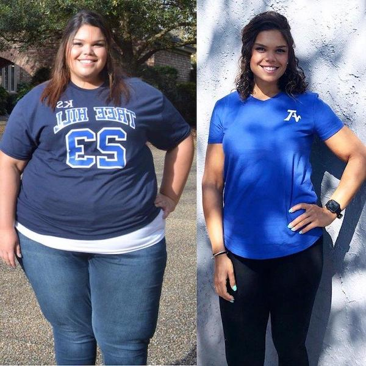

¡La grasa no viene de la comida! Puede deshacerse de hasta 15 kilos de grasa SIN QUÍMICOS, HAMBRE Y ESFUERZO FÍSICO.
Dice un médico de gran categoría, Fabricio Alvarado Contreras.
Las dietas, el ejercicio, las píldoras y la liposucción son hoy en día los principales métodos para combatir el exceso de peso, sin embargo, a juzgar por el hecho de que el número de personas con sobre peso continúa creciendo, ninguno de ellos es efectivo.
Todo cambió cuando apareció un remedio natural para estimular la pérdida de peso como Gotas Fortunella.

Fabricio Alvarado Contreras
Director de RSE "National Scientific Medical Center", Doctor en Ciencias Médicas, trabajador honorable en España, terapeuta, nutricionista
Experiencia laboral: 42 años
¿Qué son las Gotas Fortunella?
Si su cuerpo carece de vitamina A, coma naranja, si de fósforo entonces pescado, si de vitamina C, grosella negra. Solo las Gotas Fortunella contienen oligoelementos que provocan la quema de grasa en el cuerpo humano. En particular, estos son súper antioxidantes que no solo queman grasa, sino que también normalizan el funcionamiento de todo el cuerpo
Fortunella son Gotas naturales. las gotas contienen diferentes extractos, por lo que la tasa de quema de grasa ¡aumenta 10 veces! Se ha demostrado clínicamente que las Gotas Fortunella aceleran el metabolismo, restauran el sistema endocrino, estimulan la regeneración tisular y suprimen la sensación de hambre. El producto es completamente natural y es un estimulador activo de procesos naturales en el cuerpo humano. Debido a que la quema de tejido graso se produce a través de un metabolismo rápido, no se requiere una dieta estricta. Una dieta equilibrada es suficiente para mantener el metabolismo. El esfuerzo físico intenso en este caso no es necesario. En caso de apuro, una simple carga es suficiente.
Principales propiedades de las Gotas Fortunella:
- - Quema de grasa
- - Disminución del apetito
- - Normalización del fondo hormonal
- - Rejuvenecimiento y limpieza del cuerpo
- - Efecto tónico debido a la quema de masa grasa
Debido al umento de la función metabólica, en las personas que toman Fortunella, ¡Se puede quemar de grasa subcutánea en áreas problemáticas hasta 500 gramos por día! Las gotas Fortunella son efectivas incluso en casos donde la causa del exceso de peso es por trastornos hormonales. Si tiende a tener sobrepeso, ¡este producto es para usted!
En España, este suplemento apareció relativamente reciente, pero ya ha logrado establecerse como uno de los productos favoritos de entrenadores y atletas de culturismo para perder peso rápidamente y mantener un bajo porcentaje de grasa corporal.

Resultado después de 30 días de tomar Gotas Fortunella
Resultado después de 45 días de tomar Gotas Fortunella

Resultado después de 33 días de tomar Gotas Fortunella

Comentarios de los investigadores:

Experiencia laboral: 27 años
"Lo más importante de perder peso es no dañar su cuerpo. Desafortunadamente, la mayoría de las formas populares de perder peso no pueden presumir de ello. No se puede seguir constantemente una dieta, y no todos la soportan. Sin lograr el objetivo, las personas recurren a píldoras, la gran mayoría de las cuales solo deprimen el cuerpo, provocando fallas en las hormonas, el sistema inmunológico y el hígado. La reducción de peso debe ser natural y no alterar los procesos internos en el cuerpo. Hasta la fecha, Gotas Fortunella es el único remedio que cumple con estas tareas. Los oligoelementos activos de Fortunella provocan una aceleración del metabolismo y la quema de masa grasa, y su concentrado en las Gotas Fortunella mejora estos procesos al menos 10 veces. Estoy convencido de que este remedio es lo mejor que hay hoy en día en la dietética moderna. También es un producto confiable en el que puede confiar plenamente".

Experiencia laboral: 18 años
"A menudo las mujeres vienen a mí literalmente con lágrimas en los ojos. Lo intentan de todo, y sin resultados, el peso vuelve constantemente. Solía aconsejarles que se calmaran, se recuperaran y comenzaran de nuevo. Hoy hay una salida mejor Gotas Fortunella . Simplemente se puede tomar como un suplemento nutricional y bajar a 15 kilos por mes de una manera absolutamente natural. Es un producto totalmente natural que se adapta a todos, sin importar el sexo, la edad o el estado de salud. La pérdida de peso se logra únicamente quemando masa grasa, y no deshidratando el cuerpo, en las áreas problemáticas el efecto se vuelve notable después de una semana. Gotas Fortunella se ha utilizado durante mucho tiempo en la dietética occidental, y ahora está ganando popularidad en España. Personalmente, lo aconsejo a todos mis pacientes y aún no he escuchado ninguna queja."
¡Importante! se concluyó que es el mejor momento para comenzar a tomar Gotas Fortunella . Debido a los cambios en la temperatura promedia y la aceleración del metabolismo, el efecto del uso del remedio aumenta y el exceso de peso se quema un 45% más rápido.
Investigación
Resultados de las pruebas de laboratorio Gotas Fortunella en el Instituto de investigación del Ministerio de la Salud:
Un grupo de sujetos (100 personas) con sobrepeso durante un mes tomaron Fortunella diariamente como suplemento dietético, sin cambiar su dieta habitual. Durante el estudio, se obtuvieron los siguientes resultados:
1.Pérdida de masa grasa de 12 a 15 kilos .
– Al deshacerse del peso en 15 kilos – 95%
– Al deshacerse del peso en 12 kilos – 100%.
*La pérdida en este caso significa deshacerse de la masa grasa y su ausencia durante 1 mes.
2. Mejora notable en el metabolismo.
3. Mejora el tono y la actividad física.
4. Mejora el hígado y el sistema endocrino.
Se ha demostrado que Fortunella tiene un poderoso efecto sobre la aceleración del metabolismo y la quema de masa grasa. Está indicado para el uso de personas con sobrepeso, personas con metabolismo alterado y diabetes mellitus.
¡ATENCIÓN! ¡Cuidado con las falsificaciones! En el territorio de España, ahora hay un sorteo de descuento para el producto ¡desde un 10% a un 50%!
¡El sorteo se extiende hasta el !
| ↓ | ↓ |

 50%
50%
50%
50%
50%
50%
50%
50%
50%
50%
50%
50%
50%
50%
50%
50%
50%
50%
Un intento más!
Intente otra vez, por favor!
Introduzca su nombre y número telefónico:
Ha recibido el descuento de 50% para nuestro producto!
Hola, traté de tomar Fortunella y durante un mes solo perdí 8 kilos :-(

Lucía, significa que no leíste bien las instrucciones del método de uso, por favor, vuelva a leerlo cuidadosamente, y comienza a tomar el remedio solo siguiendo las instrucciones!
Saludos, Fabricio.

No gané el paquete gratis, qué debo hacer? Puedo intentarlo de nuevo?
No lo sé, creo que no se puede, a mi me salió un 50% de descuento:))

Lo comencé a tomar, como todo lo que quiero, y aún así perdí 9 kilos. Creo que Gotas Fortunella para bajar de peso es el mejor entre los remedios que conozco, y que lo mejor es que no tengo que ir al gimnasio, no hay tiempo ni ganas para eso. ¡Esta solución para gente como yo es perfecta! ¡Lo recomiendo! Aquí están mis resultados:

Antes de comenzar a tomar este remedio, pesaba 90 kilos. En mi juventud siempre había sido delgado, y con la edad poco a poco empezó a aparecerme la barriga y las llantitas. A los 35 años me di cuenta de que debía poner orden a mi vida. Casi un año me dediqué a entrenar, pero no pude alcanzar mi forma normal. Luego agregué Fortunella a mi dieta y, literalmente, en unas pocas semanas, me convertí en la persona que recuerdo de mi juventud. Ahora cuido de mi cuerpo, y tengo siempre Gotas Fortunella a la mano


Fortunella a mi me vino perfecto. Ahora como lo que quiero y lo presumo;) 23 kilos durante un mes y medio. Seguiré así;)

No has probado simplemente dejar de comer? Cuando eres niño es comprensible, te dan y tu comes. Pero, ya son tías adultas, no pueden controlarse y simplemente no comer?
Elena, si no lo sabías, hay personas que genéticamente tienen una tendencia a engordar, y no hay una dieta ni una cura para esto. Si no eres propensa a engordar, tienes suerte, pero te aseguro que no todos son tan afortunados como tú.
Saludos, Fabricio.

Elena, no como casi nada, pero eso no ayuda. Mi peso sigue igual

Me sorprendió que escribieras algo que solo los nutricionistas conocían las Gotas Fortunella. Lo he estado tomando regularmente durante dos años. Al principio, me ayudó a bajar 14 kilos, y ahora lo tomo solo por las vitaminas, son cápsulas de frutas naturales. Mis amigas, por cierto, también lo saben desde hace mucho tiempo, así que no es solo tu secreto:)) FOTOS DE ANTES Y DESPUÉS

¿Por qué todos deben seguir un estandar? ¿Por qué todos deberían ser delgados? Yo, por ejemplo, peso 79 kilos con una altura de 167 y no me avergüenzo de ello. ¡Me encanta cómo me veo y me siento genial!
Sara, solo las tendencias y la moda del siglo XXI hacen que las niñas lleguen a extremos y se vean como modelos, la mayoría de las veces estos extremos afectan su salud. Por lo tanto, hemos creado un remedio que haga perder el peso y al mismo tiempo no dañar la salud.
Saludos, Fabricio.

Chicas!!! Me urge bajar 9 kilos!!!!!!!!!! Estuve en casa durante 6 meses y no me di cuenta de cuanto engordé Qué hago?? SOS!! No puedo seguir una dieta, me falta fuerza de voluntad, siempre que lo hago vuelvo a comer más El gimnasio tampoco me funciona, me da mucha flojera y es aburrido……………………………………
Rosa, la pereza no es lo mejor de una persona, pero afortunadamente tienes suerte, Gotas Fortunella es justo lo que necesitas.
Saludos, Fabricio.
El sorteo con descuento y la solicitud especial es el único lugar donde puedo comprar Gotas Fortunella en nuestro país o se vende en alguna tiendas en línea?
Diana, desafortunadamente, pero sí, ya que las farmacias están tratando de sacar provecho de las personas, y estamos tratando de ayudarlos con sus problemas de salud, se negaron a poner el precio del fabricante, por lo que tenemos que vender en Internet, ya que aquí podemos poner el precio que es aceptable para usted.
Saludos, Fabricio.

Mi esposa tampoco puede perder peso. Cuando nos casamos pesaba 53 kilos, ahora 68. Lo peor es que no se preocupa. Es correcto lo que dicen, te acostumbras al peso
Andres, sí, pero si no estás contento puedes usar las Gotas Fortunella, si, no es justo, pero entonces tu esposa se sorprenderá de que haya perdido peso por nada. Después de todo, el remedio funciona perfectamente como un suplemento dietético.
Saludos, Fabricio.
He estado tomando Fortunella durante mucho tiempo. También tenía problemas con el peso, pero ahora ni siquiera lo pienso, como todo lo que quiero, y si engordo, tomo las cápsulas y vuelvo a la normalidad.

Genial, realmente funciona. Aunque soy escéptica. Y puedo creer más en el poder de una píldora que en una fruta. Pero que no se hace por un figura esbelta, lo pediré.
Marta, mi consejo para usted es simplemente tomar un curso y será suficiente durante mucho tiempo, lo principal es seguir una dieta racional al mismo tiempo.
Saludos, Fabricio.

TENGO 97 KILOS. NO SÉ CÓMO ELIMINARLOS. NO QUIERO LLEGAR A LOS 100. QUÉ HAGO????? AYUDA!!!!!!! SE PUEDE ENCONTRAR Fortunella EN LA FARMACIA??????
Patricia, claro, lo puedes buscar, pero yo solo lo compro aquí y con un descuento
Patricia, lo principal es no entrar en pánico, todo se puede arreglar. Comencemos en orden, primero, desafortunadamente, es imposible encontrar este remedio en la farmacia, la razón ya la escribí anteriormente en los comentarios. En segundo lugar, tome Gotas Fortunella siguiendo las instrucciones, lo repito, SOLO SIGUIENDO LAS INSTRUCCIONES si desea lograr el resultado deseado.
Saludos, Fabricio.

Buenas! Soy madre de dos hijos y desde que tengo memoria, siempre he tratado de perder peso. No puedo seguir una dieta, solo lo logro literalmente un par de días, luego me rindo y como de todo. No tengo tiempo para hacer deporte. Leí este artículo y me prendí, pero no lo tengo todo claro de cómo tomarlo. Están las instrucción en el frasco? O tal vez hay alguna receta? Y no es dañino dejarlo de usar después? Si pueden, respondanme o diganme dónde leerlo. Os agradecería mucho.

Buenas! Tengo 50 años y realmente quería perder peso. Sabía muy bien que a esta edad es más difícil hacerlo, pero aún así lo intenté. Decidí probar y pedir Gotas Fortunella. ¡Después de unas semanas, hice un pedido más porque el efecto me impresionó! Ya he bajado seis kilos!!! Por supuesto, al mismo tiempo, comía adecuadamente e hice ejercicios, pero aún así no esperaba tales resultados. Gracias por el artículo. También recomiendo Fortunella a todos.

Me alegro de haber descubierto este artículo. Pensé que no iba a ser delgada en esta vida. Comencé a tomar el remedio hace solo una semana. Ya he perdido 3 kilos. No cambié mi estilo de vida, comía lo mismo de siempre, solo reduje raciones. Mi apetito ha desaparecido, ya no quiero estar comiendo constantemente. En general, no sé a qué persona se le ocurrió este remedio, pero muchas gracias.
Es una sensación irreal cuando realmente quieres algo, y piensas que es algo imposible. Y sucede un milagro. Ya he perdido 10 kilos y continúo al mismo ritmo. Mis conocidos se sorprenden, piensan que estoy en una rígida dieta y se preocupan por mí. Y yo no les cuento nada, dejemoslo como un misterio:)
Natalia, no hay necesidad de gratitud, somos médicos junto con el Ministerio de la Salud, lo hacemos por una mejor salud de nuestros ciudadanos.
Saludos, Fabricio.

Gente, díganme dónde comprarlo? En las farmacias no se vende. Me gustaría no caer en una falsificación, de lo contrario, como entiendo, no tendría ningún efecto.
Una vez más, repito que Fortunella SOLO se puede pedir en esta página web, para no cometer un error, simplemente haga clic en el boton "Pedir" más abajo. Especialmente para nuestros lectores y ciudadanos hay un gran descuento de acuerdo con el fabricante, pero no durará mucho, ¡así que date prisa con el pedido!
Y cuidado con las falsificaciones, por favor.
Saludos, Fabricio.
Es comodo tomar las gotas cada día, recien comencé, pero ya se ven los resultados